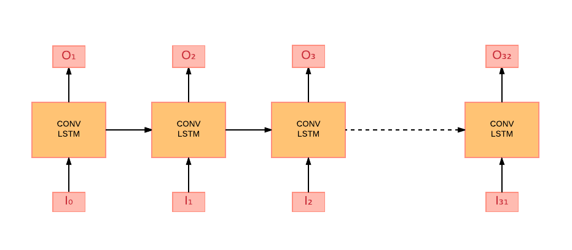
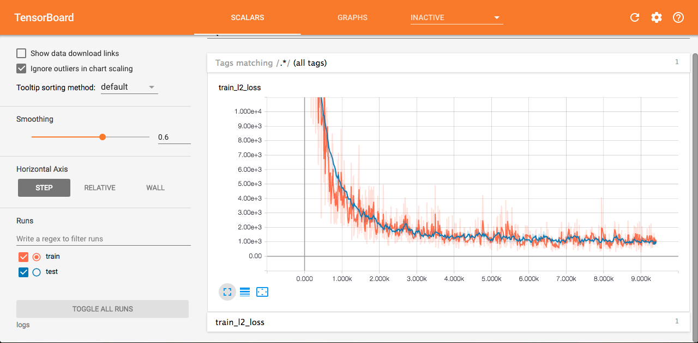

Research
Introduction
(Explain goal of the project)
Model
Vanilla Convolutional LSTM
LSTM takes only spatial information into consideration. In our case, we have spatial as well as temporal information. Thus, we use Conv LSTM in order to capture our task specific information. As mentioned here, Conv LSTMs is able to capture spatiotemporal information.
The model comprises of stacked LSTMs.
(Input)
We are trying to predict next 32 frames, given one frame. Input and Output constitutes of B, T, H, W, C where B is Batch Size of images (to take advantage of parallel processing on GPU), T is timestep of input frames, H is height, W is width and C is number of channels.
Training

Our model takes 32 frames as input and predicts 32 output frames. During training the Conv LSTM, the real input is fed. However, at the testing time, the previous output is fed as the current input.
Let the input frames be I0, I1, I2, ...., I31 and output frames generated be O1, O2, ...., O32. Here, the input frames are real images.
Testing
 During testing time, previous output is fed as next input i.e
During testing time, previous output is fed as next input i.e I1 = O1, I2 = O2 and so on. Here only I0 image is fed. Thus, in the input shape B, T, H, W, C, T i.e the timestep will become 1.
Model specifications
The batch size B used is 4, Timesteps T is 32, Image shape H, W is 64, 64 and number of channels C used are 3.
We have used the l2 loss along with the Adam optimizer.
Results obtained
 This above image shows the train/test loss on Tensorboard.
Problems
The smaller capacity of this model was an issue that we faced. Hence, we planned to change the model structure.
The above model was not very successful in learning the features from direct input at every layer. We realized the model needed to be fed with feature maps instead of the raw input images at every layer. Therefore we decided to adopt a Conv-Deconvolution architecture to learn features of the image.
Deconvolutional LSTM
Model specifications
We constructed 4 Convolution layers before LSTM.
Conv layer 1,
Number of output filters is 32, kernel size is [3,3].
Conv layer 2,
Number of output filters is 64, kernel size is [3,3], stride is 2.
Conv layer 3,
Number of output filters is 128, kernel size is [3,3], stride is 2.
Conv layer 4,
Number of output filters is 256, kernel size is [3,3], stride is 2.
We constructed 5 Deconvolution layers after LSTM.
Deconv layer 1,
Number of output filters is 256, kernel size is [3,3].
Deconv layer 2,
Number of output filters is 128, kernel size is [3,3] and stride is 2.
Deconv layer 3,
Number of output filters is 64, kernel size is [3,3] and stride is 2.
Deconv layer 4,
Number of output filters is 32, kernel size is [3,3] and stride is 2.
Deconv layer 5,
Number of output filters is 3, kernel size is [3,3] and activation function is tanh.